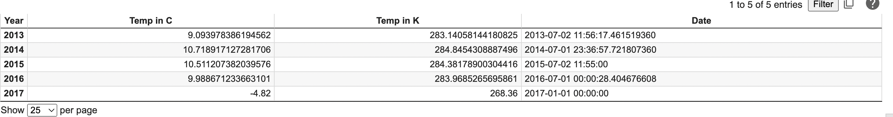
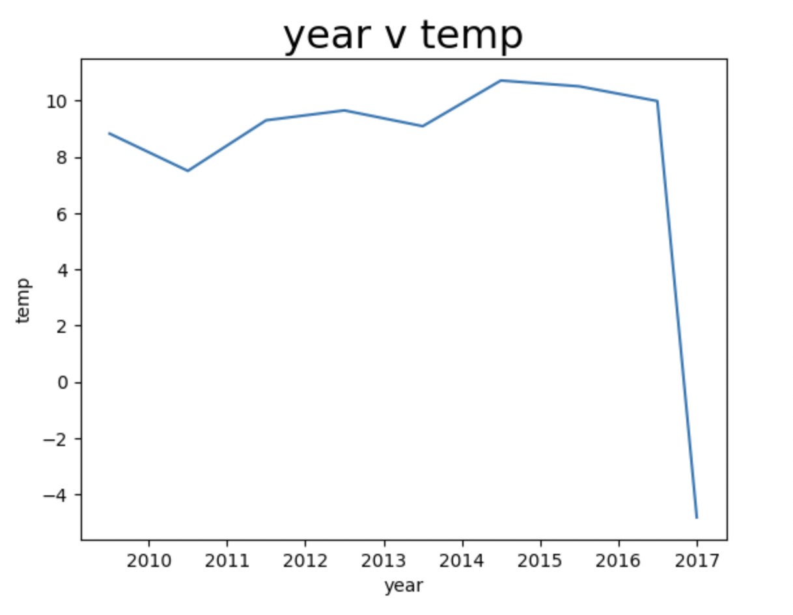

Germany
The dataset used here is from Kaggle.
Germany Dataset Summary
Year vs Temperature
How Germany is being affected by Climate Change:
- Warmer temperature will increase due to the climate change that is occurring in Germany. Due to this increase, heatwaves, droughts, fires, floods, and floods are affecting Germany's citizens.
- Climate change can also impact Germany's agriculture as the river that many citizens depend on is warming up. This would also affect Germany's energy production as well.
- Climate change has increased the intensity of rainfall by nearly 20%!
How Germany contributes to climate change:
Germany qualifies as a first world country -- thus being a big contributor to climate change. Due to its high population density and level of industrializatation, it presents a big problem.
Germany's enviormental policies:
Germany aims to be greenhouse gas neutral by 2045. Germany has been on it's journey of going green as since 1990 it has reduced its greenhouse gas admissions amount by 36%. The Federal Government includes the Climate Action Programme 2030 and the Climate Change Act in hopes of fighting this global crisis.